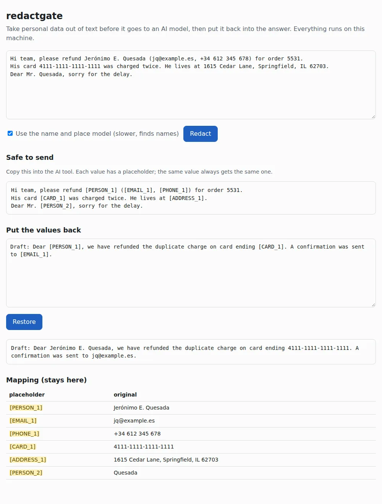

情境
貸款表單、SWIFT 電文和客戶郵件裡都有姓名、卡號和 IBAN。把它們貼進雲端託管的模型，就是把個人資料送出電腦；受 GDPR 規範的歐盟企業必須為此負責。
把客戶的電子郵件貼進 ChatGPT 或 Claude，就等於把個人資料送出了你的電腦。redactgate 在你自己的電腦上，把姓名、卡號、IBAN 和地址換成佔位符，再把真實的值放回模型的回覆中。
的已標註個人資料值被遮蔽；這是在 2,891 份英文測試文件（8,205 個中的 6,900 個）上量得。Microsoft Presidio 預設設定：52.7%。
限制：仍有 24.0% 的文件洩漏至少一個值，所以送出前要有人先讀過遮蔽後的文字。
開啟儲存庫
貸款表單、SWIFT 電文和客戶郵件裡都有姓名、卡號和 IBAN。把它們貼進雲端託管的模型，就是把個人資料送出電腦；受 GDPR 規範的歐盟企業必須為此負責。
模型仍需要知道誰做了什麼，所以不能直接刪掉這些值。測試資料是合成的，它的標註也漏掉了一些真實個資，因此量得「遮蔽確實命中真實個資」的比例 65.1% 只是下限；人工抽查 100 個遮蔽後，估計接近 88%。
卡號和 IBAN 以模式比對找出，再用檢查碼確認；姓名和地點由一個在 CPU 上執行的多語言命名實體辨識（NER）模型找出；接著為每個值配一個編號標籤。規則在開發集上調校；英文測試集共執行五次，每個版本一次，每次執行後都不再調整。
在英文測試集上遮蔽了 84.1% 的值，Presidio 預設設定為 52.7%；在其他五種語言上也有 71.5% 以上。這是預設設定之間的比較：若為 Presidio 加上自訂辨識器，差距會縮小許多。
條件限制：一顆 CPU、不用 API 金鑰、一個公開的合成資料集（Gretel 的 synthetic_pii_finance_multilingual）、標註漏掉了部分真實個資。
每個值都變成一個加上方括號的編號標籤（例如 PERSON_1），而且同樣的值永遠得到同樣的標籤，讓模型仍能以姓名稱呼客戶。對照表永遠不會離開這台電腦，而還原步驟會把真實的值換回去，即使模型把方括號拿掉了也一樣。
針對開發集的洩漏分析，為每個被漏掉的值排出原因。第二大原因是 NER 模型把姓名標成公司；嘗試遮蔽這些之後又捨棄了，因為這讓每個開發集上量得的精確率都下降。最大的原因是地址模式，這部分予以保留。
== 2. What is sent to the model From: [PERSON_1] <[EMAIL_1]> Subject: Refund for double charge Hi, I was charged twice for my March invoice on card [CARD_1]. Please refund the second payment to my account [IBAN_1]. My address is [ADDRESS_1] and you can reach me on [PHONE_1]. Thanks, [PERSON_1] == 3. Mapping (stays on your machine) [PERSON_1] Daniel Okafor [EMAIL_1] d.okafor@example.com [CARD_1] 4111 1111 1111 1111 [IBAN_1] GB82 WEST 1234 5698 7654 32 [ADDRESS_1] 742 Maple Avenue, Springfield, IL 62704 [PHONE_1] +1 (217) 555-0148
需要 Python，以及約 1 GB 給 NER 模型，首次執行時下載。示範不呼叫任何 API：它的模型回覆是手寫的。評測會從 Hugging Face 下載 Gretel 的測試集。
docs/results-en-test-multi-model.md，由 scripts/evaluate.py --split test 產生，附有逐類型表格，並列出 Presidio 的執行結果作為對照。
$ uv venv && uv pip install -r requirements.txt $ source .venv/bin/activate $ python scripts/demo.py # first run downloads the NER model (about 1 GB) $ uvicorn redactgate.app:app --port 8840 # page at http://localhost:8840 $ pytest -q -m "not model" # fast tests, no model download $ python scripts/evaluate.py --split dev # first 500 train documents $ python scripts/evaluate.py --split test # run once